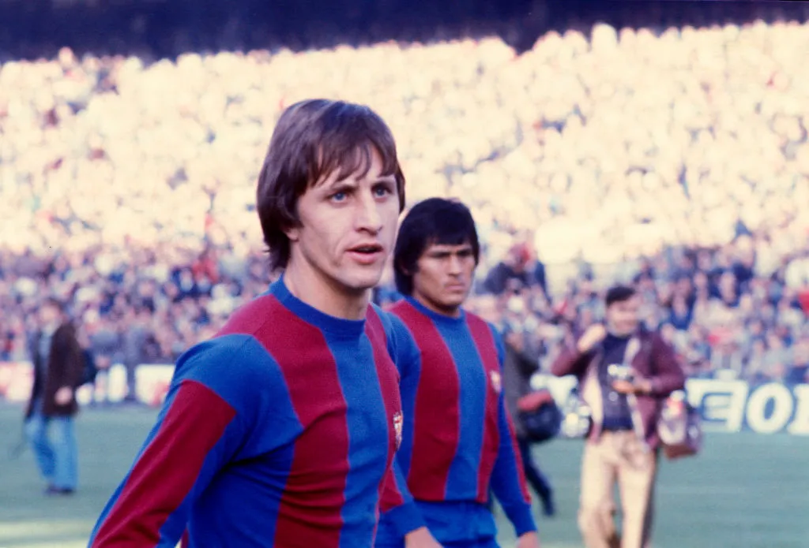
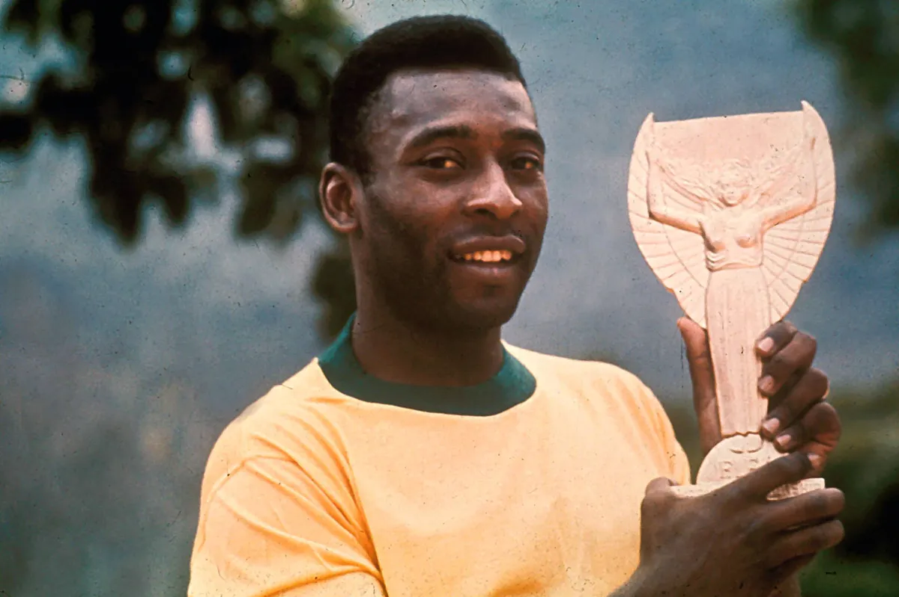
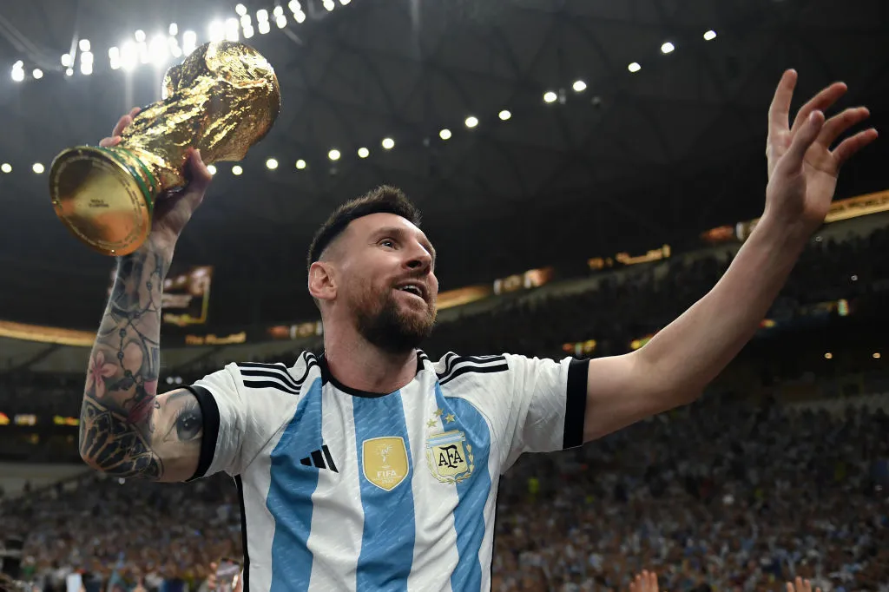

| Zinedine Zidane, often regarded as one of the most elegant footballers of all time, mesmerized fans with his exceptional ball control, vision, and technique. Known for his grace on the field, Zidane played for top clubs like Juventus and Real Madrid, leading France to victory in the 1998 FIFA World Cup. |
 |
Johan Cruyff is regarded as the pioneer of "Total Football," a revolutionary style of play that emphasizes fluidity, with players constantly rotating positions. He became the symbol of this philosophy while playing for Ajax and FC Barcelona, winning multiple league titles and three consecutive European Cups with Ajax. |
 |
| Pele is widely hailed as the greatest footballer to ever play the game. Born in Brazil, he burst onto the scene as a teenager, leading his country to three World Cup victories (1958, 1962, and 1970). Renowned for his prolific goal-scoring ability, Pele is officially credited with scoring over 1,000 goals in his career. |
 |
Lionel Messi is considered one of the most talented footballers of all time, known for his extraordinary dribbling, vision, and goal-scoring ability. He spent the majority of his career at FC Barcelona, where he became the club's all-time leading scorer and won numerous domestic and international titles, including the UEFA Champions League. |
 |
| Cristiano Ronaldo is a football phenomenon known for his incredible athleticism, powerful shots, and versatility as both a winger and striker. Throughout his illustrious career, Ronaldo has won league titles in England, Spain, and Italy, along with multiple UEFA Champions League trophies. |
 |
Diego Maradona is one of football's most colorful and controversial figures. His talent was undeniable, with his extraordinary dribbling ability and close ball control being nearly unmatched. Maradona reached his peak at the 1986 FIFA World Cup, where he almost single-handedly led Argentina to victory. |
 |